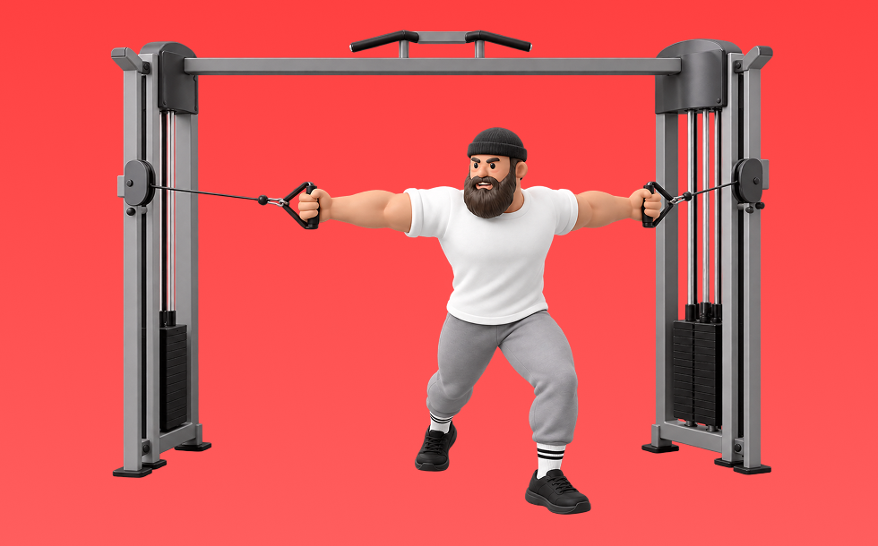
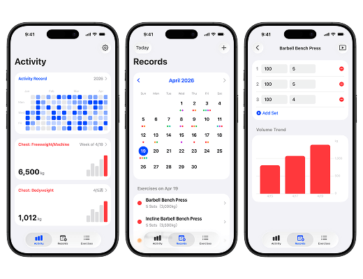

Cable Flye

Use a cable machine to arms-together flye motion. Open the arms and bring them together with the pecs. Targets pecs (focus on adduction/feel); constant tension through the range. Great for pec contraction and shape.
- Primary Muscle Group
- Chest
- Detailed Muscles
- Pectorals / Front delts / Triceps
- Equipment
- Cable
- Also Known As
- クロスオーバー / cable crossover
YouTube Videos
-
STOP F*cking Up Cable Flys (PROPER FORM!)
-
How to PROPERLY Cable Chest Fly (FIX THIS NOW!)
-
How To: Cable Fly (High-To-Low) || 3 GOLDEN RULES
-
Do Cable Flyes LIKE THIS for a BIGGER CHEST (Target Everything)
-
STANDING CABLE FLY
-
Mid-Cable Chest Fly | Proper Technique & Common Mistakes
-
How to: Cable Fly for Lower Chest (High to Low)
-
STOP Doing Chest Flys Like This (5 Mistakes Slowing Your Chest Gains)
-
How To: High Cable Chest Fly
YouTube Shorts
-
The PERFECT Cable Chest Fly
-
How to do Cable Flyes Correctly
-
Do Cable Flyes LIKE THIS for a BIGGER CHEST
-
Cable Chest Fly Angles: Know the Difference!
-
❌ How To Do A Cable Chest Fly ✅
-
❌ Cable Chest Fly Mistakes
-
How to do a Standing Cable Chest Flys!
-
Cbum Demonstrates The Perfect Technique To Perform Cable Flys
-
How to do Cable Flys for Maximizing Chest Growth
-
Chest Flys tips #chestworkout #chestday #chestbuilder #chestisolations
-
How to Perform the High Cable Chest Fly (Exercise Demonstration)
-
Cable fly variations…
-
Cable Chest Fly Variations (KNOW THE DIFFERENCE!)
-
Low to high cable flye tutorial
-
Cable Chest Fly Tutorial
-
🎯 How to Fix Your Cable Chest Fly Form
-
The New and Improved Way I do Cable Flys for Maximizing Mid Chest Growth (No Bench Needed)
-
Cable Fly Mistake! STOP DOING THIS!
-
Best Way to do Low to High Cable Flys for Upper Chest
-
✅ The PERFECT Pec Dec Fly
-
Cable Fly Angles Explained (Upper, Mid, Lower Chest)
-
❌ You're Doing Machine Chest Flyes WRONG!
-
You need this Setup of Decline Cable Flyes ✅ ~ Read Pinned Comment to know more
-
📌Complete Chest Workout with Cable
-
FIX THESE Dumbbell Chest Fly Mistakes!
-
❌High To Low Cable Fly (Avoid This Mistake!)
-
The PERFECT Rear Delt Cable Fly
-
🔥 Cable Chest Fly Variations – Build a Bigger Chest! 💪
-
✅🥵 Cable Chest Flys Good Or bad? When to do? #exercisetips
-
How to do Cable Flyes for Every Head of your Chest
-
How to properly do high to low cable flys
-
STANDING CABLE FLY | TIPS 💡
-
How to: Properly Use The Peck Deck Chest Fly Machine With Good Form (AVOID THIS MISTAKE)
-
Best Way to do Low to High Cable Flyes for Upper Chest (IMHO)
-
How to target your whole chest in cable fly, Cable fly variations - Chest.
-
❌ Dumbbell Fly Mistake (STOP DOING THIS!)
-
Low To High Cable Fly (Avoid This Mistake!)
-
Full chest workout with cable machine 💯✅ #excercisetips #chesttricepworkout #shortvideo
-
You need this setup of horizontal Cable Flyes for Middle Chest ✅ ~ Read Pinned Comment for more
-
Cable Reverse Flyes: Know The Difference ⚠️ #back
-
🚫 Stop Making These Chest Fly Mistakes! 🚨
How to Perform
- Set a stable position and brace your torso.
- Press with control without using momentum.
- Lower under control while keeping range of motion.
Form Tips
- Do not shrug your shoulders
- Keep wrists neutral
- Avoid excessive momentum
Pro Tips
- Prioritize form and range of motion before adding load.
- If shoulders feel uncomfortable, reduce load and range.
Rep Guide
General guidelines. Adjust based on your goal, experience, and condition.
- Strength: 1-5 reps
- Hypertrophy: 6-12 reps
- Endurance: 13-20 reps
Get the app
Log your trainingand workoutsin Biggr.Start for freeright now.
